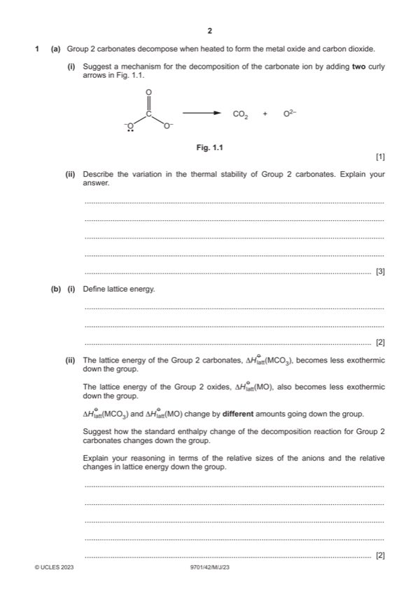

Question 1

Original paper page 2
Part 1(a)(i) — solution
Answer: 1 · AND
1
ARROW 1 starts from O– to the C–O bond
AND
ARROW 2 starts at the C-O bond to other O– ion
Mark points
- Correct result: 1
- Correct result: AND
Part 1(a)(ii) — solution
Answer: OR charge density of M2+ decreases
- [M1] increases (down the group) 3
- [M2] (cat)ionic radius / ion size increases (down the group)
- [M2] + decreases
- [M3] less polarisation / distortion
Mark points
- [M1] increases (down the group) 3
- [M2] (cat)ionic radius / ion size increases (down the group)
- [M2] + decreases
- [M3] less polarisation / distortion
Part 1(b)(i) — solution
- [M1] energy released when one mole of a ionic solid / compound is formed 2
- [M2] from gas (phase) ion(s) / gaseous ion(s) (under standard conditions)
Mark points
- [M1] energy released when one mole of a ionic solid / compound is formed 2
- [M2] from gas (phase) ion(s) / gaseous ion(s) (under standard conditions)
Part 1(b)(ii) — solution
Answer: OR changes more OR changes faster
- (Hdecomp / it) becomes more positive/less negative 2
- size /(ionic) radii of oxide ion is smaller (than carbonate ion) ORA
- so Hlatt of oxides becomes ORA
Mark points
- (Hdecomp / it) becomes more positive/less negative 2
- size /(ionic) radii of oxide ion is smaller (than carbonate ion) ORA
- so Hlatt of oxides becomes ORA
Part 1(c)(i) — solution
2MnO4– + 6H+ + 5SO32– 2Mn2+ + 3H2O + 5SO42– 1
2023 Page 6 of 19
9701/42 Cambridge International AS & A Level – Mark Scheme May/June 2023
Mark points
- Include the ideas shown in the solution above.
Part 1(c)(ii) — solution
Answer: OR moles K2SO3 (if 100% pure) = 3.40 ÷ 158.3 = 0.02148 · OR
- [M1] M2 3
- moles MnO4– = 0.025 22.40 / 1000 = 5.6 10–4
- moles SO32– = 5.6 10–4 5 / 2 = 1.4 10–3 (in 25 cm3) ecf from (c)(i) and bullet 1
- moles SO32– = 1.4 10–2 (in 250 cm3) ecf bullet 2
- mass K2SO3 = 1.4 10–2 158.3 = 2.2162 g ecf bullet 3
Mark points
- [M1] M2 3
- moles MnO4– = 0.025 22.40 / 1000 = 5.6 10–4
- moles SO32– = 5.6 10–4 5 / 2 = 1.4 10–3 (in 25 cm3) ecf from (c)(i) and bullet 1
- moles SO32– = 1.4 10–2 (in 250 cm3) ecf bullet 2
- mass K2SO3 = 1.4 10–2 158.3 = 2.2162 g ecf bullet 3
Part 1(d) — solution
S() tetrahedral 1
Mark points
- Include the ideas shown in the solution above.